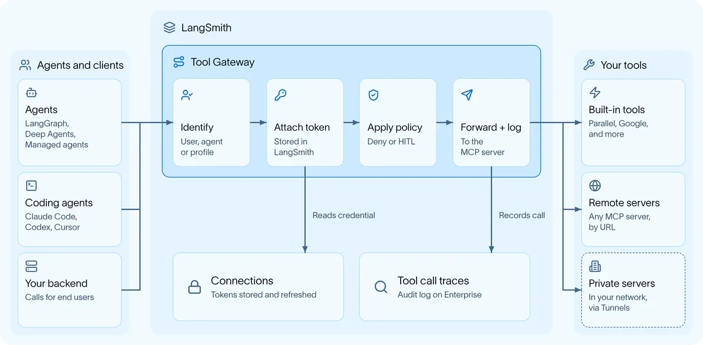
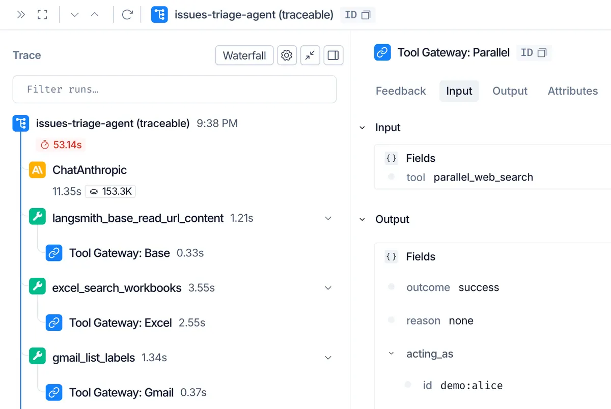

代理工具治理：一個 URL 收下憑證、身分與政策
導讀原文：LangChain 產品公告，宣布 LangSmith Tool Gateway 以 Public Beta 登上 LangSmith Agent Platform。
Tool Gateway 把工具清單、憑證與政策收到一個 kit URL 後面：agent 只看得到被核准的工具，每次呼叫都留下一筆帶身分的 trace。
工具治理為何變成代理治理的核心
Agent 從等 prompt 變成按排程或事件自己跑，團隊就得先回答三件事：它能碰哪些工具、用誰的身分、事後查不查得到紀錄。
LangSmith 原本用 LLM Gateway 管模型呼叫：花費上限、模型 fallback、rate limit、遮蔽個資與金鑰。Tool Gateway 與它並列，管的是工具那一半。
難題在規模：上線後的 agent 要服務數百到數千名使用者，每人一套權限，等於持續管理並刷新大量 token，還要留下可供稽核的存取紀錄。原文說這比本地開發難上幾個數量級。
每個 agent 各自接線，不只拖慢交付，也把暴露面放大、變得更零散。
| 需求 | 原文定義 | Tool Gateway 的對應機制 |
|---|---|---|
| Access | 這個 agent 能呼叫哪些工具、用哪組憑證 | kit：發佈在單一 URL 的精選工具集，agent 只看得到 kit 內的工具 |
| Control | 每位使用者能做什麼，必要時加上審核 | deny policies（組織／workspace 層）＋ approval policies（敏感呼叫經人工確認） |
| Visibility | 追蹤哪些工具被呼叫，確認 agent 用了正確憑證 | tool call traces（工具、server、user、結果、耗時）＋ Enterprise audit log |
原文舉一家美國大型零售商：店務助理 agent 用店員個人憑證查庫存、排班與信箱；庫存 agent 每天凌晨 3 點用自己的 service credentials 對帳。
該團隊已建 50 多個 MCP server、合計上千個工具，但每個 agent 只該用其中一小塊經核准的子集，並在對的情境拿對的憑證。
硬編碼的作法——每家供應商自己寫 OAuth、把 token 存在 agent 旁邊——小規模可行，工具與使用者一多就崩，也讓安全團隊無從稽核。
一個 kit URL 之後：工具、身分與內建 server
Tool Gateway 做的事很單純：呼叫者把工具請求打進同一個 kit 的 URL，Gateway 解析身分、管理存取、記下 trace，再轉送到真正的 MCP server。

註冊工具只做一次。任何 MCP server 用 URL 加入；Google、Salesforce、GitHub 這類常用服務直接開內建 server，工具不必每個 agent 重設一遍。
工具集中在一處被發現與取用，新 agent 上線更快，安全團隊也看得到每個 agent 能碰到什麼。
內建的好處是常見工具幾分鐘就能接上：不必自己跑 server，也不必註冊 OAuth app。
kit 可開放給整個 workspace 或只給個人；接上 kit 的 agent 只看得到打包進去的工具。工具上千個時，一次全載會拉高延遲、也更難選對工具。
search mode 讓 agent 先查自己的 kit，只載入當前任務相關的那幾個工具，而不是把整份清單塞進 context。
接入是五步：開 Tools、加 server（MCP URL 或內建）、連帳號或存 API key、挑工具組成 kit 拿一個 MCP URL、把 client 指向它。
原文說任何 MCP client 都能接，點名 LangChain、Deep Agents、Managed Deep Agents、Claude Code 與 Cursor。
| 接入方式 | 由誰維護 | 原文列出的服務 |
|---|---|---|
| 內建（按 Connect 登入） | LangSmith 跑 OAuth app，不必自己註冊 | Google、Microsoft、Salesforce、GitHub、Linear、LinkedIn |
| API key 或公開 | 開啟後填入 API key | Parallel search、Exa、Tavily、Apollo、Ashby、Pylon、網頁讀取 |
每次呼叫只對應兩種身分之一。acting as the user 走使用者自己的憑證，由 Okta、Entra ID 辨識，連一次帳號後每次沿用。
使用者還沒連帳號時，呼叫回傳登入連結，等他完成驗證再自動續行，工程團隊不必為 on-behalf-of-user 多寫程式。
acting as the agent 用綁在 agent 上的憑證：LangSmith 的 agent auth，或管理者一次接好共用憑證的 profile，供背景自主執行的 agent 重用。
政策、核准、稽核：留下可查的紀錄
deny policies 可在組織或 workspace 層級擋工具，細緻度到使用者、service key 或兩者組合，也能設成對所有人生效、只列例外。
approval policies 在 MCP client 跳出確認。原文的例子是寫入資料倉儲前必須有人審，agent 每次嘗試寫入都會被人看過一遍。
開啟 tool call trace 後，每次呼叫記錄工具、server、使用者、結果與耗時；送給工具與工具回傳的資料不進紀錄。
tool call 本來就會出現在 LangSmith trace；Tool Gateway 再加的是「用了誰的憑證、哪個 server、延遲與結果」。原文說除錯因此更快，安全審查也有紀錄可依。

Enterprise 方案的 audit log 跨組織記下哪個工具、以誰的身分執行，原文說「昨晚 3 點這個 agent 用了哪些工具、用了誰的憑證」因此變得可回答。
限定要留住：原文最後請讀者聯繫業務以取得 deny policies 與 audit log（編輯推論：兩者並非所有方案預設開放）。
帶走三件事
工具治理遲早要集中。每個 agent 各自寫 OAuth，規模一大就沒有確定性檢查可擋。
先定身分模型，再挑工具層。代使用者執行與背景自主執行，是兩條憑證路徑。
trace 是稽核的入場券。沒有逐筆記錄，安全團隊只能相信 agent 的自述。
同一主題的其他館藏
導讀為本站編輯內容（AI 摘解自原文與館藏重點，非官方文件）；引述數據出自原文，圖解與小標為編輯整理。原圖為 LangChain 官方架構圖與產品截圖，依著作權法第 52 條合理引用、未改作。內容經對照原文的獨立事實審查後發布。